Peter Parker (Tierra-616)
Peter Parker de Tierra-616 es el Spider-Man original de Marvel, reconocido por su inteligencia superior, experiencia en combate y compromiso con la justicia. Aunque carece de los poderes adicionales de otros personajes, ha enfrentado numerosos villanos, siempre protegiendo a los inocentes con honor y responsabilidad
 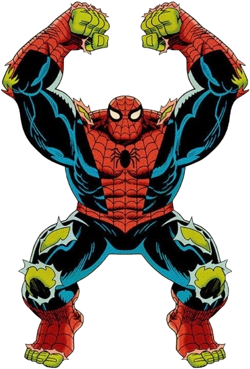
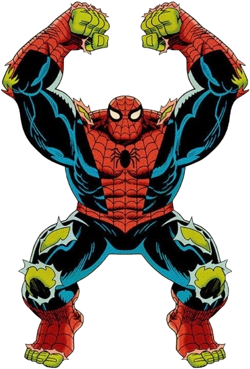
Spider-Hulk
Esta es la fusión entre Spider-Man y Hulk, la cual ocurrió cuando Peter Parker se expuso a una bomba gamma creada por el Líder. Dicho personaje cuenta con la combinación de los poderes de ambos héroes, lo que lo convierte en un ser increíblemente fuerte, resistente y salvaje.
 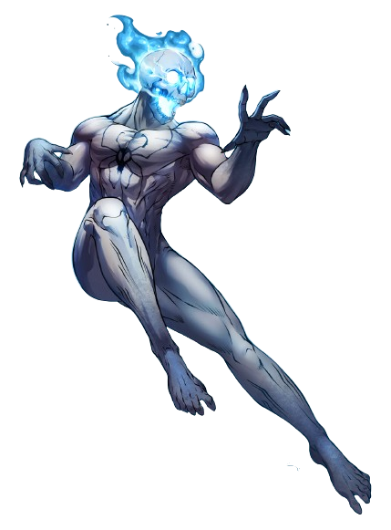
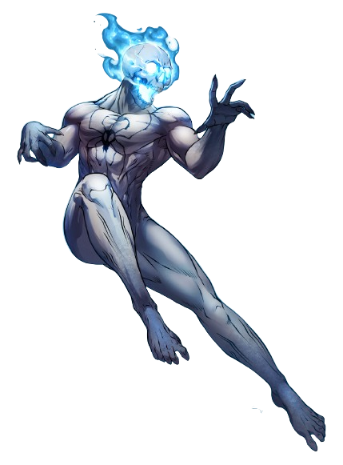
Ghost Spider (Tierra-11638)
Ghost Spider es la versión fantasmal de Peter Parker en la serie animada Ultimate Spider-Man. Criado por su tío Ben, un científico malvado que le robaba sus poderes, Peter murió a manos de él, pero su espíritu quedó ligado a su cuerpo. Usando un traje blanco y negro, puede alternar entre su forma humana y su forma fantasmal.
 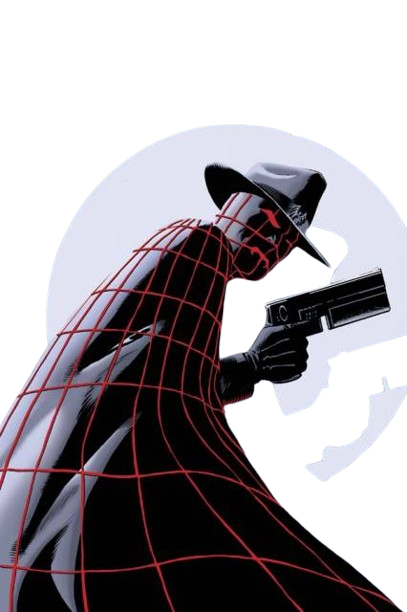
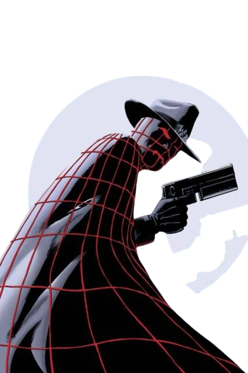
The Spider
Imagínate que un detective y Spider-Man se fusionaran, pues justamente eso es The Spider, una versión victoriana de Peter Parker llamada Peter Parquagh, el cual proviene de Tierra-311. Aquí el protagonista es un joven huérfano que trabaja como asistente del explorador Sir Richard Wentworth y recibe una mordida de una araña irradiada por un meteorito.
 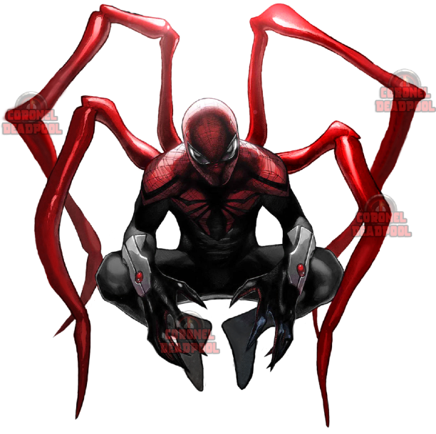
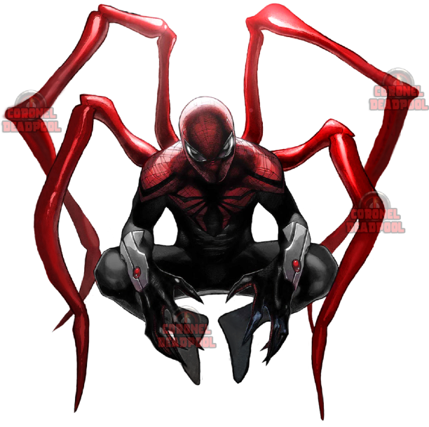
Superior Spider-Man
El villano Doctor Octopus logra intercambiar su mente con la de Peter Parker antes de morir. Decidido a ser un mejor Spider-Man, Otto utiliza su inteligencia superior y su falta de compasión para combatir el crimen. Modifica el traje de Spider-Man con tentáculos mecánicos, lentes infrarrojos, sensores térmicos y un sistema de comunicación con robots araña propios.
 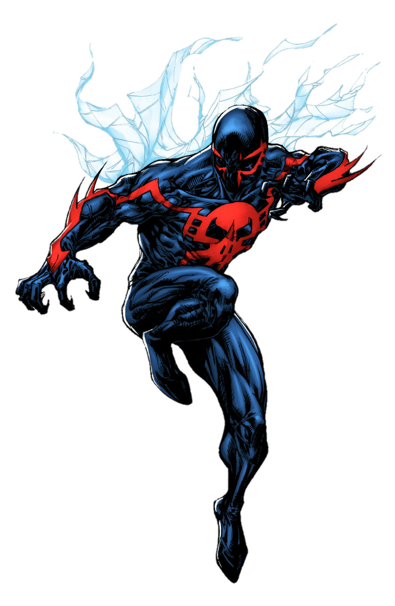
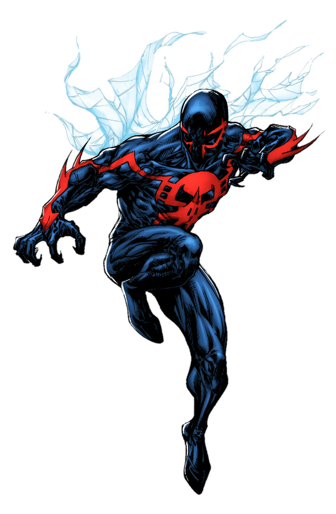
Spider-Man 2099
Miguel O'Hara, también conocido como Spider-Man 2099 en Tierra-928, es un genetista que trabaja para la corporación corrupta Alchemax. Tras un experimento manipulado, termina con el 50% de su ADN fusionado con el de una araña, otorgándole habilidades similares a las de Spider-Man, además de garras retráctiles, colmillos venenosos y garras en los antebrazos.
 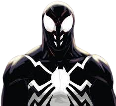
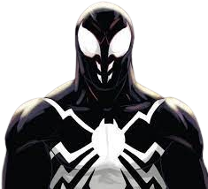
Spider-Shadow
La historia de Spider-Shadow explora un escenario en el que Spider-Man nunca se separa del simbionte Venom. Esto lleva a una versión oscura de Peter Parker, corrompido por la influencia de Venom, volviéndolo violento, agresivo y vengativo. En esta trama, llega incluso a matar a algunos de sus enemigos principales como Kingpin, Kraven y Norman Osborn.
 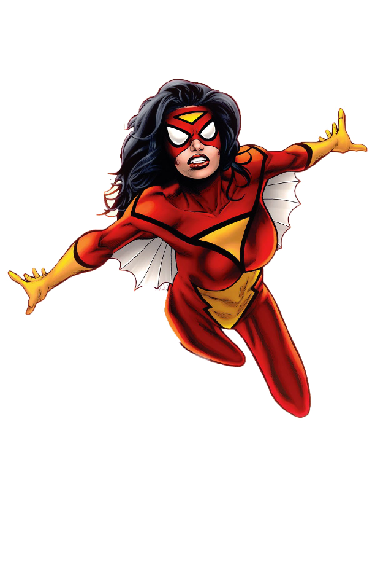
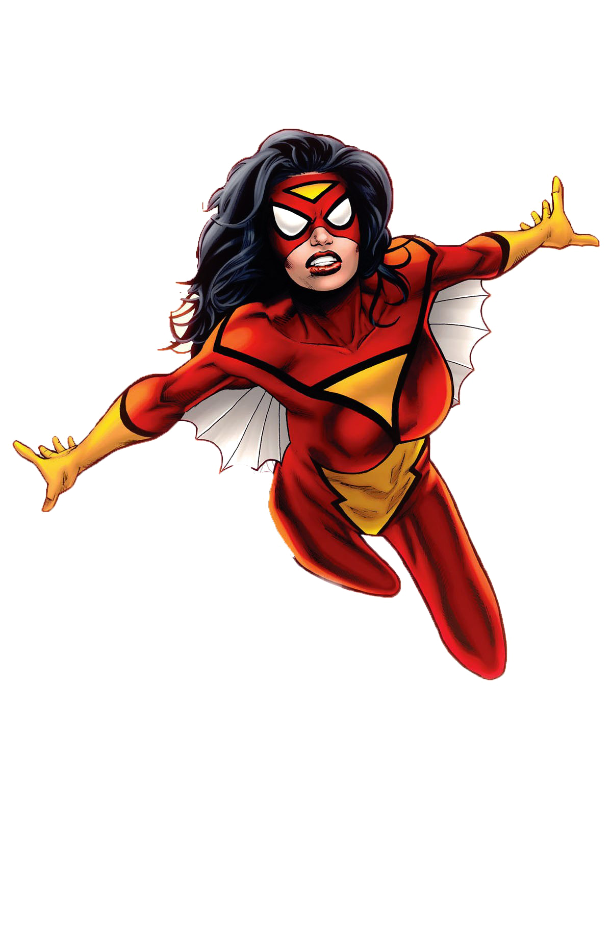
Spider Woman (Jessica Drew)
Jessica Drew fue sometida a experimentos genéticos con ADN de araña que le dieron poderes arácnidos. Al mismo tiempo, es capaz de emitir descargas bioeléctricas llamadas "venom blasts" y liberar feromonas que le permiten manipular las emociones de los demás.
 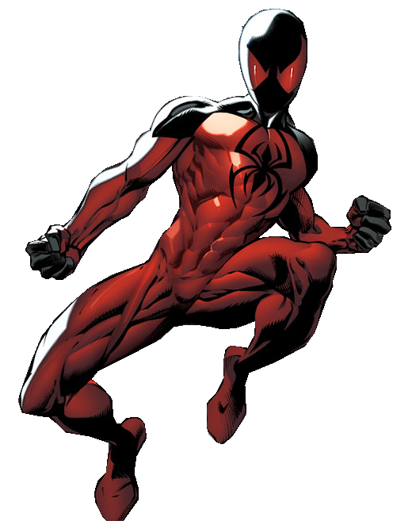
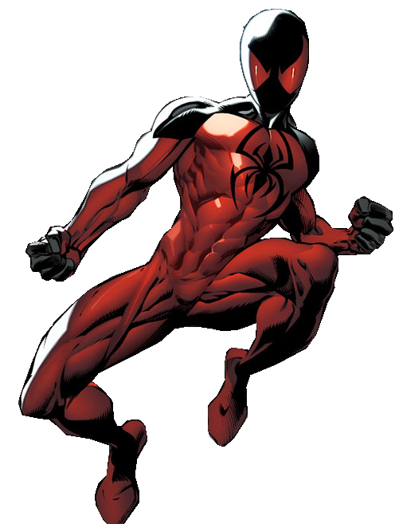
Scarlet Spider (Kaine)
Jessica Drew, tras experimentos con ADN de araña, obtiene poderes arácnidos y la habilidad de manipular emociones con feromonas. Al rebelarse contra Hydra, se une a S.H.I.E.L.D. y los Vengadores. Como Spider-Woman, es la versión femenina más poderosa de Spider-Man, capaz de detener grupos de enemigos con sus habilidades especiales.
 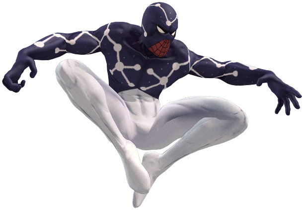
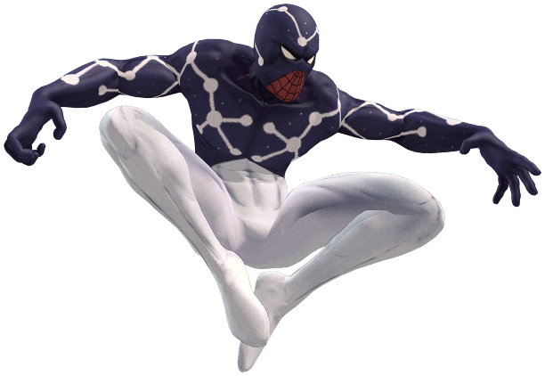
Cosmic Spider-Man
Cosmic Spider-Man recibió el poder del Enigma y eso es algo que lo convierte en una de las veriones más poderosas del Spider-Verse. Esta misteriosa entidad le otorgó el control sobre la energía y la materia, permitiéndole así tener la capacidad de volar, teletransportarse, crear campos de fuerza, manipular la realidad y lanzar rayos cósmicos.